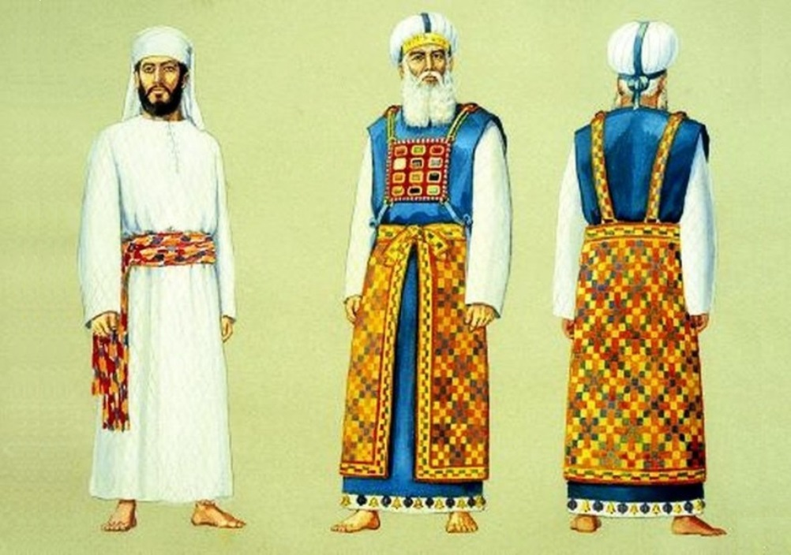
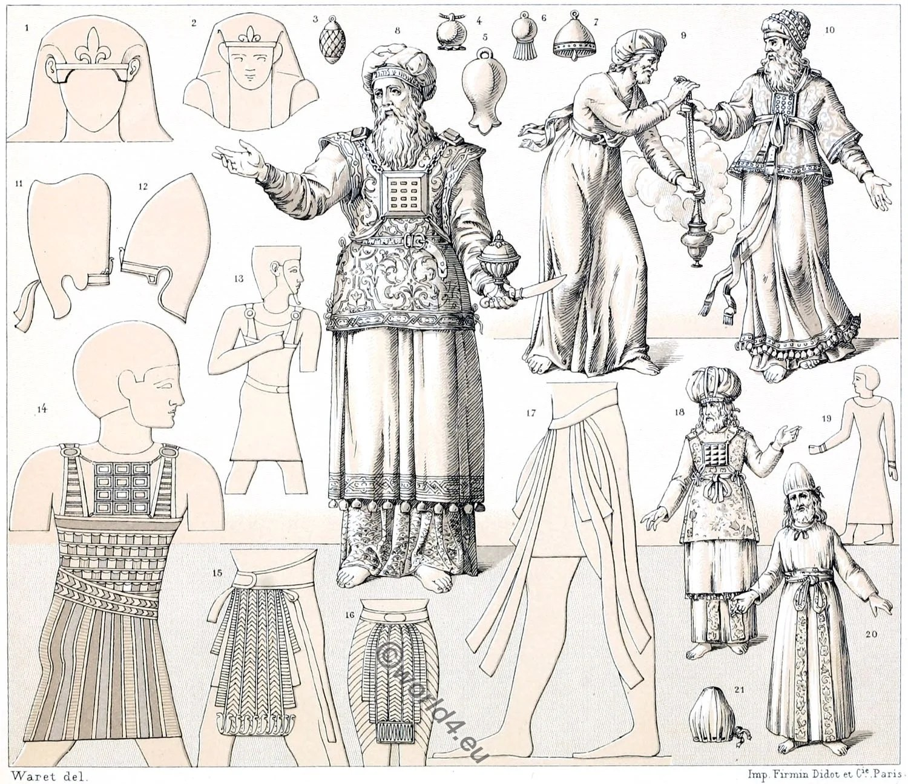

BLOCO 02
Levítico 8-10
Período: ~1446 a.C. (Monte Sinai - Primeiro Ano do Êxodo)
Após estabelecer o sistema sacrificial nos capítulos 1-7, Deus agora institui o sacerdócio levítico. Arão e seus filhos são consagrados para servir como mediadores entre Deus e o povo. Este é um momento solene e sagrado na história de Israel, marcando o início do ministério sacerdotal que duraria até a destruição do Segundo Templo em 70 d.C.
Descobertas arqueológicas revelam que o sacerdócio era uma instituição comum no Antigo Oriente Próximo. No entanto, o sacerdócio levítico se distingue radicalmente:

Reconstrução artística das vestes sagradas do Sumo Sacerdote, incluindo o peitoral com as 12 pedras preciosas representando as tribos de Israel.
Fonte: Biblical Archaeology - High Priest Garments

Ilustração dos sacerdotes levitas realizando seus deveres no Tabernáculo, mostrando a ordem e santidade do culto.
Fonte: Ancient Israel Ministry - Levitical Priesthood
1. Mediação Sacerdotal: Os sacerdotes serviam como ponte entre Deus santo e o povo pecador, prefigurando Cristo, nosso Sumo Sacerdote (Hebreus 4:14-16).
2. Santidade no Serviço: O fogo estranho de Nadabe e Abiú ensina que Deus deve ser adorado conforme Suas instruções, não segundo nossa criatividade (Levítico 10:1-3).
3. Consagração Total: A cerimônia de sete dias de consagração mostra que servir a Deus requer preparação, purificação e dedicação completa.
1. Servir com Reverência: Como sacerdotes do Novo Testamento, devemos servir a Deus com temor e tremor, não de forma casual ou irreverente.
2. Preparação Espiritual: Assim como os sacerdotes eram consagrados, devemos nos preparar espiritualmente antes de ministrar ou adorar.
3. Obediência Exata: A tragédia de Nadabe e Abiú nos ensina que Deus valoriza a obediência sobre a criatividade humana no culto.